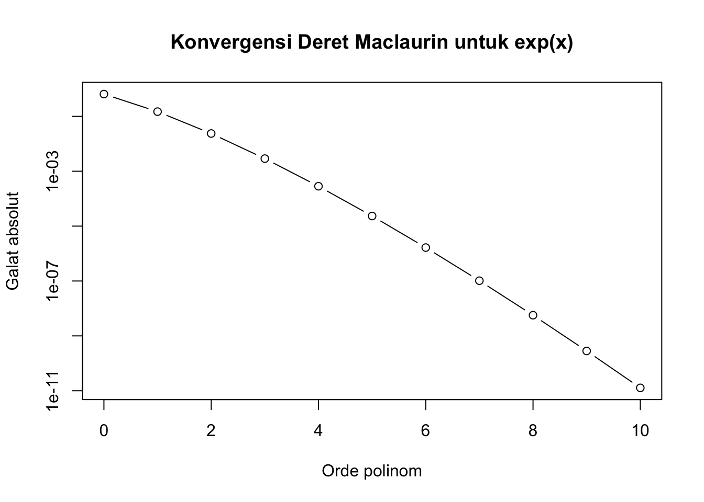

[1] 1.648698Modul Metode Numerik
Aproksimasi Fungsi dan Analisis Galat
Pendahuluan
Dalam metode numerik, banyak fungsi matematika tidak selalu dapat dihitung secara langsung dengan operasi aritmetika sederhana. Sebagai contoh,
\[ e^x,\qquad \sin x,\qquad \cos x,\qquad \ln(x) \]
merupakan fungsi yang dalam komputasi numerik perlu dievaluasi dengan algoritma tertentu.
Salah satu pendekatan yang dapat digunakan adalah deret Taylor. Dengan deret Taylor, suatu fungsi dapat dinyatakan sebagai penjumlahan tak hingga dari suku-suku polinomial.
Dalam praktik numerik, deret tersebut tidak digunakan sampai tak hingga. Deret dipotong setelah sejumlah suku tertentu sehingga diperoleh suatu aproksimasi.
Sebagai contoh,
\[ e^x = 1+x+\frac{x^2}{2!} +\frac{x^3}{3!} +\frac{x^4}{4!}+\cdots \]
Jika hanya digunakan tiga suku pertama, maka
\[ e^x \approx 1+x+\frac{x^2}{2!}. \]
Pendekatan tersebut menghasilkan nilai yang tidak persis sama dengan nilai sebenarnya. Selisih inilah yang berkaitan dengan galat pemotongan (truncation error).
Tujuan Pembelajaran
Setelah mempelajari materi ini, mahasiswa diharapkan mampu:
- menjelaskan konsep deret yang digunakan dalam metode numerik;
- menjelaskan deret Taylor dan Maclaurin;
- menggunakan deret Taylor untuk mengaproksimasi nilai fungsi;
- menghitung galat aproksimasi;
- menjelaskan pengaruh jumlah suku terhadap ketelitian hasil;
- menentukan kriteria penghentian berdasarkan toleransi galat;
- mengimplementasikan aproksimasi deret menggunakan R.
Deret sebagai Aproksimasi
Misalkan diberikan deret
\[ S = a_0+a_1+a_2+a_3+\cdots. \]
Jumlah hingga suku ke-\(n\) disebut jumlah parsial:
\[ S_n=\sum_{k=0}^{n}a_k. \]
Jika
\[ \lim_{n\to\infty}S_n=S, \]
maka deret dikatakan konvergen menuju \(S\).
Dalam metode numerik, kita tidak mungkin menghitung jumlah suku sampai tak hingga. Oleh karena itu, kita menggunakan jumlah parsial \(S_n\) sebagai pendekatan terhadap \(S\).
\[ S\approx S_n. \]
Semakin baik nilai \(S_n\) mendekati \(S\), semakin baik pula aproksimasi yang diperoleh.
Contoh sederhana
Perhatikan deret
\[ 1+\frac12+\frac14+\frac18+\cdots. \]
Jumlah beberapa suku pertama adalah
\[ S_1=1, \]
\[ S_2=1+\frac12=1.5, \]
\[ S_3=1+\frac12+\frac14=1.75, \]
dan
\[ S_4=1+\frac12+\frac14+\frac18=1.875. \]
Deret tersebut sebenarnya mempunyai nilai
\[ S=2. \]
Terlihat bahwa jumlah parsial semakin mendekati nilai sebenarnya.
Deret Taylor
Deret Taylor merupakan salah satu konsep penting dalam metode numerik karena memungkinkan suatu fungsi didekati menggunakan polinom.
Untuk fungsi \(f(x)\) yang memiliki turunan yang cukup, deret Taylor di sekitar titik \(a\) diberikan oleh
\[ f(x) = f(a) +f'(a)(x-a) +\frac{f''(a)}{2!}(x-a)^2 +\frac{f^{(3)}(a)}{3!}(x-a)^3 +\cdots. \]
Dalam bentuk sigma,
\[ f(x) = \sum_{k=0}^{\infty} \frac{f^{(k)}(a)}{k!}(x-a)^k. \]
Dalam komputasi numerik, deret tersebut dipotong sampai suku tertentu:
\[ f(x)\approx \sum_{k=0}^{n} \frac{f^{(k)}(a)}{k!}(x-a)^k. \]
Hasil pemotongan ini disebut polinom Taylor berorde \(n\).
Deret Maclaurin
Deret Maclaurin merupakan kasus khusus dari deret Taylor dengan
\[ a=0. \]
Dengan demikian,
\[ f(x) = f(0) +f'(0)x +\frac{f''(0)}{2!}x^2 +\frac{f^{(3)}(0)}{3!}x^3+\cdots. \]
atau
\[ f(x) = \sum_{k=0}^{\infty} \frac{f^{(k)}(0)}{k!}x^k. \]
Beberapa deret Maclaurin yang sering digunakan dalam metode numerik adalah sebagai berikut.
Fungsi eksponensial
\[ e^x = 1+x+\frac{x^2}{2!} +\frac{x^3}{3!} +\frac{x^4}{4!}+\cdots \]
Fungsi sinus
\[ \sin x = x-\frac{x^3}{3!} +\frac{x^5}{5!} -\frac{x^7}{7!}+\cdots \]
Fungsi cosinus
\[ \cos x = 1-\frac{x^2}{2!} +\frac{x^4}{4!} -\frac{x^6}{6!}+\cdots \]
Aproksimasi Fungsi dengan Deret
Misalkan kita ingin menghitung
\[ e^{0.5}. \]
Deret Maclaurin untuk \(e^x\) adalah
\[ e^x= 1+x+\frac{x^2}{2!} +\frac{x^3}{3!} +\frac{x^4}{4!}+\cdots. \]
Dengan \(x=0.5\),
\[ e^{0.5} = 1+0.5+\frac{0.5^2}{2!} +\frac{0.5^3}{3!} +\frac{0.5^4}{4!}+\cdots. \]
Jika digunakan tiga suku pertama,
\[ e^{0.5} \approx 1+0.5+\frac{0.5^2}{2}. \]
Sehingga
\[ e^{0.5}\approx1.625. \]
Nilai sebenarnya adalah sekitar
\[ e^{0.5}\approx1.648721. \]
Dengan demikian, pendekatan menggunakan tiga suku belum menghasilkan nilai yang sangat dekat.
Jika lebih banyak suku digunakan, hasilnya akan semakin mendekati nilai sebenarnya.
Mengapa Jumlah Suku Penting?
Perhatikan pendekatan berikut:
\[ e^{0.5}\approx 1+0.5+\frac{0.5^2}{2!} +\frac{0.5^3}{3!}+\cdots. \]
Setiap suku tambahan memberikan kontribusi terhadap nilai aproksimasi.
Misalnya:
| Jumlah suku | Aproksimasi |
|---|---|
| 1 | 1.000000 |
| 2 | 1.500000 |
| 3 | 1.625000 |
| 4 | 1.645833 |
| 5 | 1.648438 |
| 6 | 1.648698 |
Terlihat bahwa hasil semakin mendekati
\[ e^{0.5}=1.648721\ldots \]
Hal ini merupakan ide dasar penggunaan deret dalam metode numerik:
Deret tak hingga digantikan oleh jumlah hingga yang memberikan aproksimasi dengan tingkat ketelitian yang dapat diterima.
Galat Pemotongan
Ketika deret tak hingga dipotong menjadi sejumlah suku tertentu, muncul galat.
Misalkan nilai sebenarnya adalah
\[ x_{\text{true}} \]
dan nilai aproksimasi adalah
\[ x_{\text{approx}}. \]
Galat absolut didefinisikan sebagai
\[ E_a= |x_{\text{true}}-x_{\text{approx}}|. \]
Untuk contoh sebelumnya,
\[ x_{\text{true}}=e^{0.5} \]
dan
\[ x_{\text{approx}}=1.625. \]
Maka
\[ E_a = |1.648721-1.625| \]
sehingga
\[ E_a\approx0.023721. \]
Relative Error
Selain galat absolut, kita dapat menggunakan galat relatif:
\[ E_r= \left| \frac{x_{\text{true}}-x_{\text{approx}}} {x_{\text{true}}} \right|. \]
Dalam persen,
\[ E_r(\%)= \left| \frac{x_{\text{true}}-x_{\text{approx}}} {x_{\text{true}}} \right|\times100\%. \]
Untuk contoh \(e^{0.5}\) dengan tiga suku,
\[ E_r(\%) \approx 1.439\%. \]
Galat relatif berguna untuk mengetahui seberapa besar kesalahan dibandingkan dengan ukuran nilai sebenarnya.
Remainder Taylor
Ketika deret Taylor dipotong setelah suku ke-\(n\), terdapat sisa atau remainder:
\[ R_n=f(x)-P_n(x). \]
Bentuk remainder Taylor yang umum digunakan adalah
\[ R_n= \frac{f^{(n+1)}(\xi)} {(n+1)!}(x-a)^{n+1}, \]
dengan \(\xi\) berada di antara \(a\) dan \(x\).
Dengan demikian,
\[ f(x)=P_n(x)+R_n. \]
Dalam konteks metode numerik:
\[ \boxed{ \text{nilai sebenarnya} = \text{aproksimasi} + \text{galat pemotongan} } \]
Semakin kecil \(R_n\), semakin baik aproksimasi yang diperoleh.
Implementasi Deret \(e^x\) Menggunakan R
Kita dapat membuat fungsi sederhana untuk menghitung \(e^x\) menggunakan deret Maclaurin.
Melihat Konvergensi Aproksimasi
Kita dapat melihat bagaimana hasil berubah ketika jumlah suku ditambah.
x <- 0.5
n <- 0:10
approximation <- sapply(
n,
function(k) exp_series(x, k)
)
data.frame(
n = n,
approximation = approximation
) n approximation
1 0 1.000000
2 1 1.500000
3 2 1.625000
4 3 1.645833
5 4 1.648438
6 5 1.648698
7 6 1.648720
8 7 1.648721
9 8 1.648721
10 9 1.648721
11 10 1.648721Nilai tersebut dapat dibandingkan dengan nilai sebenarnya.
true_value <- exp(x)
error <- abs(true_value - approximation)
data.frame(
n = n,
approximation = approximation,
error = error
) n approximation error
1 0 1.000000 6.487213e-01
2 1 1.500000 1.487213e-01
3 2 1.625000 2.372127e-02
4 3 1.645833 2.887937e-03
5 4 1.648438 2.837707e-04
6 5 1.648698 2.335403e-05
7 6 1.648720 1.652645e-06
8 7 1.648721 1.025454e-07
9 8 1.648721 5.664166e-09
10 9 1.648721 2.818772e-10
11 10 1.648721 1.276268e-11plot(
n,
error,
type = "b",
log = "y",
xlab = "Orde polinom",
ylab = "Galat absolut",
main = "Konvergensi Deret Maclaurin untuk exp(x)"
)
Kriteria Penghentian
Dalam komputasi numerik, kita tidak perlu terus menambahkan suku sampai jumlah suku yang sangat besar.
Sebaliknya, kita dapat menentukan toleransi.
Misalnya:
\[ E_a<10^{-6}. \]
Artinya, proses perhitungan dihentikan ketika galat diperkirakan telah lebih kecil dari \(10^{-6}\).
Dalam implementasi sederhana, kita dapat menggunakan perubahan nilai aproksimasi sebagai indikator:
\[ |S_n-S_{n-1}|<\varepsilon. \]
Contoh dalam R:
exp_series_tol <- function(x, tol = 1e-10, max_iter = 100) {
sum <- 1
term <- 1
for (k in 1:max_iter) {
term <- term * x / k
new_sum <- sum + term
if (abs(new_sum - sum) < tol) {
return(list(
approximation = new_sum,
terms = k + 1
))
}
sum <- new_sum
}
return(list(
approximation = sum,
terms = max_iter + 1
))
}
exp_series_tol(0.5)$approximation
[1] 1.648721
$terms
[1] 12